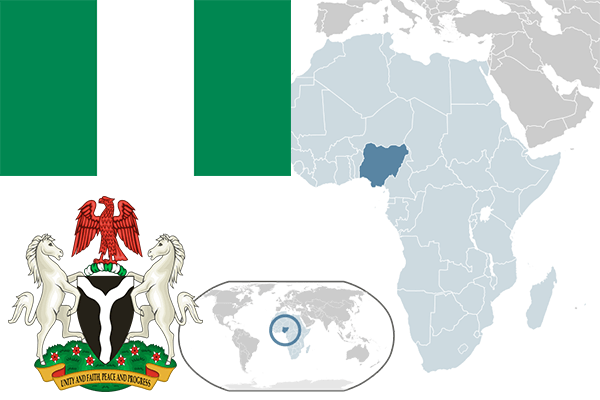

To`liq nomi: Nigeriya Federativ Respublikasi
Region: Gʻarbiy Afrika
Qonunchilik shakli: Federativ Respublika
Mustaqillik kuni: 1 oktabr 1960-yil
Poytaxt: Abuja
Maydoni: 923,768 km²
Chegaradosh davlatlari: Benin, Chad, Kamerun, Niger
Aholisi: 185,989,640 (2016-yil)
Aholi zichligi: 197.2/km2
Aholining o`rtacha yoshi: 53,07 yil (2015-yil)
Rasmiy tili: Ingliz tili
Dini: 53% musulmon, 43% xristian, 2% boshqa dinlar
Pul birligi: Naira
Telefon prefiksi: +234
Internet domen: .ng
Xalqaro tashkilotlarga a`zoligi: BMT (1960-yil)
Dengiz va okeanlarga chiqishi: Gvineya qo’ltig’i
YIM: Butun: $460 mlrd.(2018-yil yanvar) Jon boshiga: $2,376
Yirik shaharlari: Lagos, Kano, Ibadan, Abuja